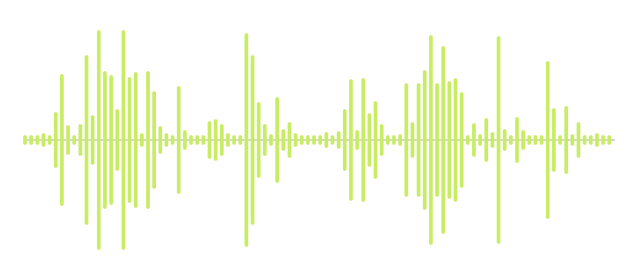
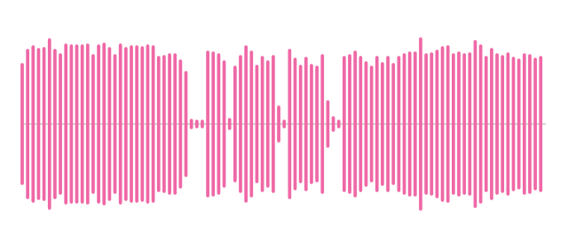
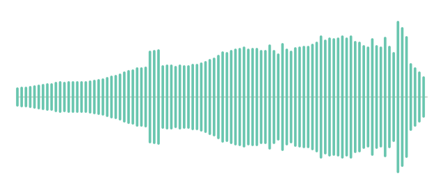
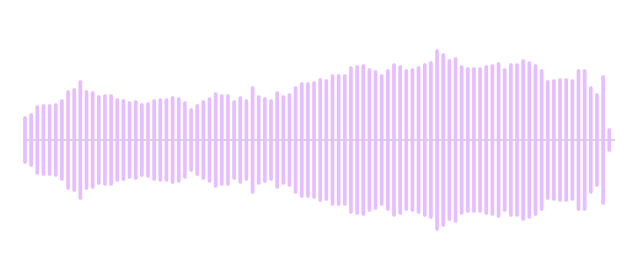

Feral Current gathers six months of playing with sound into six tracks, drawing on 809 distinct sounds from a 1,000-sound pool in Listening Garden. This sedimentation of practice takes new form through algorithmic composition with an AI collaborator. I guided the exploration through artistic direction and listening; together we developed rules and scores that the Garden’s audio engine performed. Garden-processed sounds meet in rhythms that dissolve and return, bringing accumulated experiments into unexpected relationships.
Meet a few sounds.
In Floor Takes Root, these four sounds take different roles around the groove. Hear each Garden sound on its own, then hear them meet in the album.

Yarrow
Kalanchoe
Iris
JuniperThese are individual source previews, not isolated album stems. Hear them meet on SoundCloud ↗
A rhythm to hold onto.
There is a lot to enter here. I hear months of Listening Garden activity moving around me; the groove gives that flood a spatial anchor. It stays legible as the garden grows dense around it.
The scores move fragments through space, with grains and echoes that cross and return. The rhythm gives the ear a place to stand as those sounds go around it.
Sounds, systems, listening.
Pierre Schaeffer’s 1966 Treatise on Musical Objects offers one way to think about recorded sound as material for composition and close listening. Here, sounds gathered through earlier Garden sessions become part of new relationships. Schaeffer’s book ↗
In a 1995 interview, Brian Eno described making musical systems and then attending closely to the sounds he put into them. That offers a comparison for how Feral Current moves among selecting sounds, setting rules and listening back. These are connections for thinking with the album, not claims of direct influence. Eno’s interview ↗